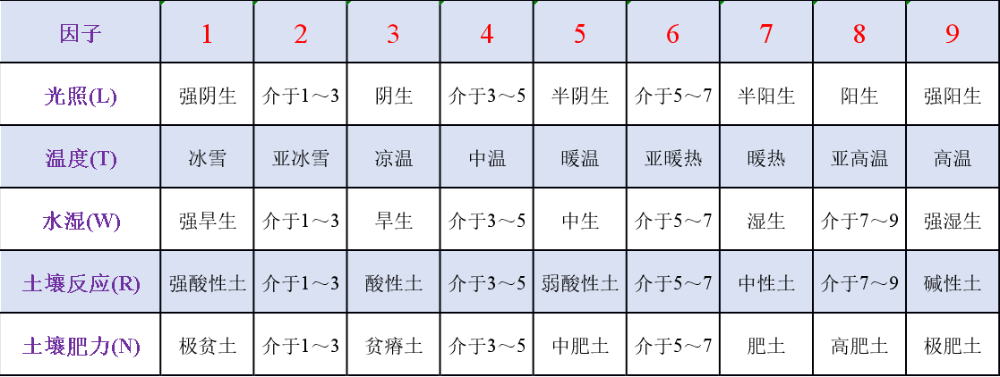

中国常绿阔叶林分布区域内各地植物区系的研究一再证明区内具有丰富的植物种类。单就一个地区而言，华东地区（25°40′-33°N；111°15′-123°E）共有原生维管植物244科1637属7827种（严靖和汪远, 2023）；华中地区（25°47′ -33°20′N；103°30′-111°50′E）计种子植物207科1279属6390种（祁承经等，1995）。就一省而言，广东省共有维管束植物350科1828属6864种（宋柱秋等，2023），广西壮族自治区野生维管植物共计262科1793属8221种57亚种460变种1变型（韦毅刚等，2023），福建省野生植物231科1402属4550种（安昌等，2023），江西省野生维管植物214科1253属4761种及种下分类群（寄玲等，2022），浙江省有野生种子植物有190科1,085属3,347种（金孝锋等，2022），贵州省有维管植物250科1543属5593种（黄威廉等，1988），四川省有维管植物232科，1621属，9254种（四川植被协作组，1980），云南省仅核实的种子植物至少有245科2140属13253种（Zhu H., 2016）。就一个市统计，如昆明市有种子植物195科1099属3170种（昆明林业局等，1998），即使已近常绿阔叶林分布边缘的上海市也有野生及逸生维管植物148科609属1238种及种下分类群(杜诚等，2022）。这一切表明常绿阔叶林的种类组成有丰富的区系背景。
中国常绿阔叶林分布区自白垩纪以来，未曾受到那种在欧洲发生的使整个或大部分植被消亡的大陆冰川影响，这里现今仍生长着第三纪或第三纪以前就已存在的古老类型，例如曾生活在中晚侏罗纪的银杏（Ginkgo）现仍有野生状态残存在这一地区，在白垩纪曾广泛分布的鹅掌楸(Liriodendron)在中国东部的庐山、黄山、天目山、武夷山等地也有零星分布。众多的第三纪植物，在现今的常绿阔叶林群落中仍占有重要地位或是常见种类，如：栲属（Castanopsis）、润楠属（Machilus）、山胡椒属（Lindera）、木姜子属（Litsea）、楠属（Phoebe）、樟属（Cinnamomum）、冬青属（Ilex）、榕属（Ficus）、柃属（Eurya）、枫香属（Liquidambar）、八角枫属（Alangium）、槭属（Acer）、朴属（Celtis）、杜鹃花属（Rhododendron）、卫矛属（Euonymus）、荚迷属（Viburnum）、鼠李属（Rhamnus）、泡花树属(Meliosma)、柳杉属（Cryptomeria）、杉木属（Cunninghamia）、榧属（Torreya）、蛇葡萄属（Ampelopsis）、勾儿茶属（Berchemia）、蔷薇属（Rosa）、猕猴桃属（Actinida）、菝葜属（Smilax）等。这一切反映了常绿阔叶林在区系组成上与第三纪植物群有密切联系。
由于环境因子多种多样，因此，植物生态习性可从多方面加以判别，Ellenberg 曾选用光、温度、大陆度、土壤湿度、土壤反应、土壤含氮量6种环境因子，将中欧西部2000多种维管束植物按照它们对这6种因子的生态关系划分为9个等级，称为生态指示值（ecological indicator value）（Ellenberg，1974, 1979）。后来，又增加了土壤盐度，并将植物种类扩大到苔藓植物以及地衣（Ellenberg et al., 1991）。中欧西部现存的每一种植物对上述7种生态因子都有一个相对的生态等级值，这为群落的划分，以及它在指示环境方面的应用，奠定了坚实的基础。
组成中国常绿阔叶林的维管束植物，特别是乔木树种的生态习性虽有过若干描述，总体而言，缺少系统的研究，考虑到现有工作的基础，我们在确定种的生态习性时，选用了光照、温度、湿度、土壤反应和土壤肥沃度5项指标，其中前2项是气候指标，后3项则与土壤性质有关。參照Ellenberg（1979）分级方法，各项因子均划分为9级，最小级为1级，最大级为9级，第5级是中位值，各个因子的分级如下：
